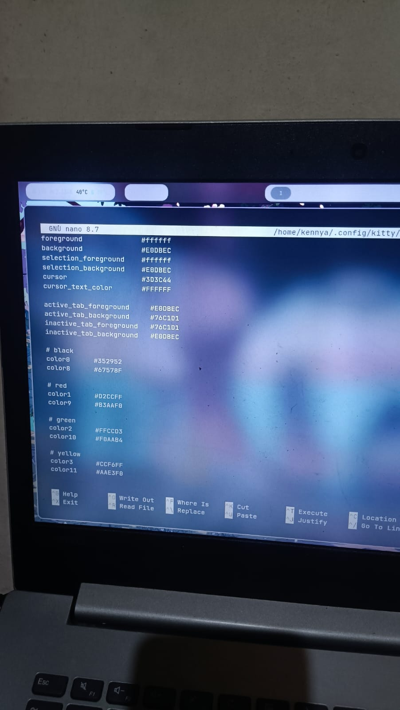

Kustomisasi Linux
Mengembangkan serta kustomisasi linux dari sistem hingga dekstop environtment sesuai dengan kebutuhan pribadi.

About Project
Project ini dibuat sebagai bagaimana cara kita memahami penggunaan linx sebagai desktop, selain itu dengang melakukan kustomisasi linux kita dapat menyesuakikan resource sesuai kebutuhan yang diinginkan.
Pada project ini saya mengembangkan linux environtment milik sendiri untuk menyesuaikan kebutuhan saya.
Technologies
Linux Terminal
CSS
Linux
Kembali